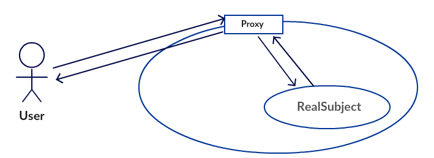
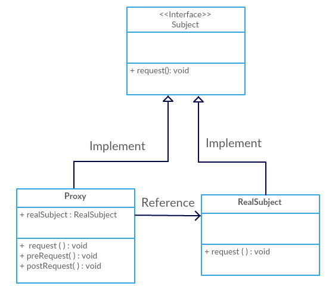

代理模式
定义：为其他对象提供一种代理以控制对这个对象的访问。
现实生活中就有很多代理模式的影子:假设你是一个公司的工程师，能提供一些技术服务，还有一个公司的客服，他不懂技术，而我是公司的客户，需要你们公司提供技术服务。显然，我不会直接去找你，我只会去和客服沟通。这是客服会根据情况来决定找不找你提供技术服务，当然客服也可以提供一些额外的服务。对我而言，我根本不需要接触到你，只需要与客服沟通就行了。事实上，站在我的角度，客服就代表了你们公司，不需要去了解真正为我服务的是谁。
代理模式示意图：

场景
一个对象不适合或者不能直接引用另一个对象，而代理对象可以在客户端和目标对象之间起到中介的作用，解除调用者和真实对象之间的耦合。
代理模式体现在编程中的一个思想:不要随意去修改别人已经写好的代码或者方法,如果需改修改,可以通过代理的方式来扩展该方法。
代理模式结构
抽象角色(Subject)：通过接口或抽象类声明真实角色实现的业务方法。
真实角色(RealSubject)：实现抽象角色，定义真实角色所要实现的业务逻辑，供代理角色调用。
代理角色(Proxy)：实现抽象角色，是真实角色的代理，通过真实角色的业务逻辑方法来实现抽象方法，并可以附加自己的操作。
代理模式类图：

进一步了解代理模式
优点:
代理对象可以在目标对象实现的基础上,增强额外的功能操作,即扩展目标对象的功能，符合开闭原则
代理对象可以在客户端和目标对象之间起到中介的作用，这样起到了中介的作用和保护了目标对象的作用。
缺点：
在客户端和目标对象增加了一个代理对象，会造成请求速度变慢
增加系统的复杂性。
代理模式分类
静态代理:静态定义代理类，我们自己静态定义的代理类。
动态代理:通过程序动态生成代理类，该代理类不是我们自己定义的，而是由程序自动生成，常用的动态代理技术有JDK自带的动态代理和CGLIB动态代理。
代码实例
这里，先介绍静态代理的代码实例，关于动态代理的JDK实现以及用CGLIB包的实现会在后面的博客中详细学习。
代码演示内容：明星与其经纪人的工作模式
抽象角色(Subject)：
|
|
真实角色(RealSubject)：明星本人
|
|
代理角色(Proxy)：明星的经纪人
|
|
测试：
|
|
我们通过这个例子，可以看出来静态代理是手动创建或工具生成代理类的源码，再编译代理类。所谓静态也就是在程序运行前就已经存在代理类的字节码文件，代理类和委托类的关系在运行前就确定了。
上述例子中，只有唱歌这个方法是明星本人来完成的，其他的方法例如签合同和收钱等都是由代理(经纪人)来完成，明星与经纪人就是现实生活中典型的代理模式的例子。
关于代理模式，应用最多的还是动态代理。动态代理类的源码是在程序运行期间由JVM根据反射等机制动态的生成，所以不存在代理类的字节码文件。代理类和委托类的关系是在程序运行时确定。在后续博客中，会详细介绍动态代理。